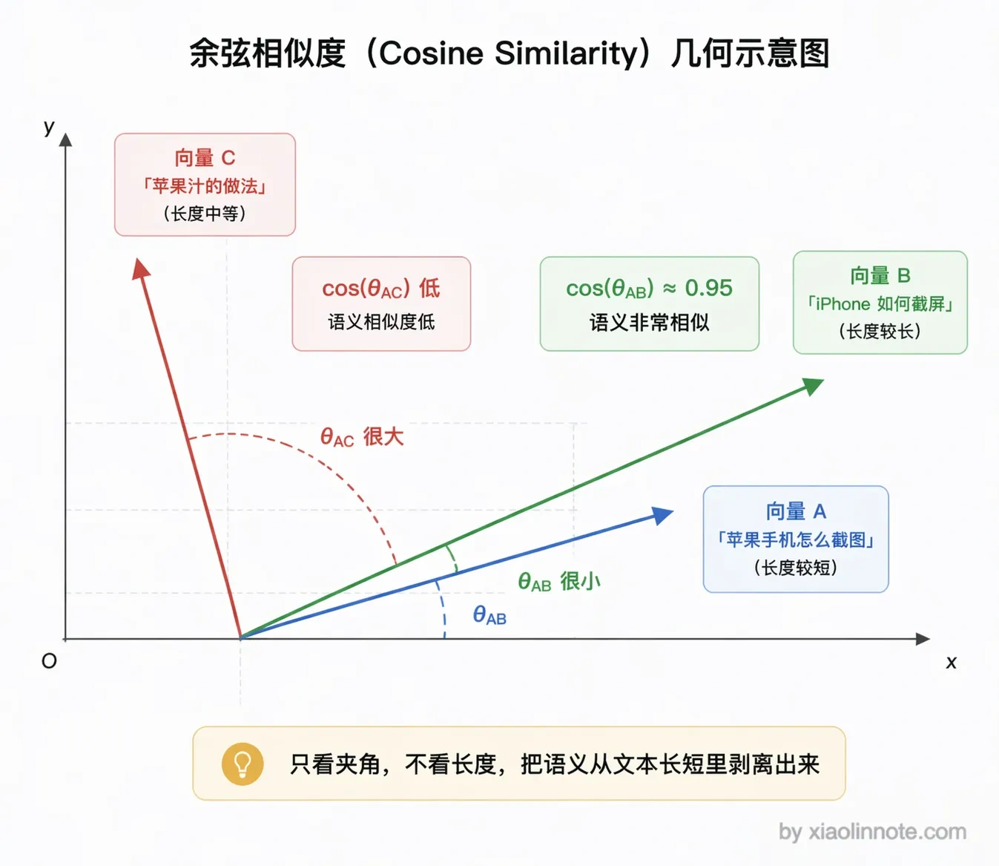
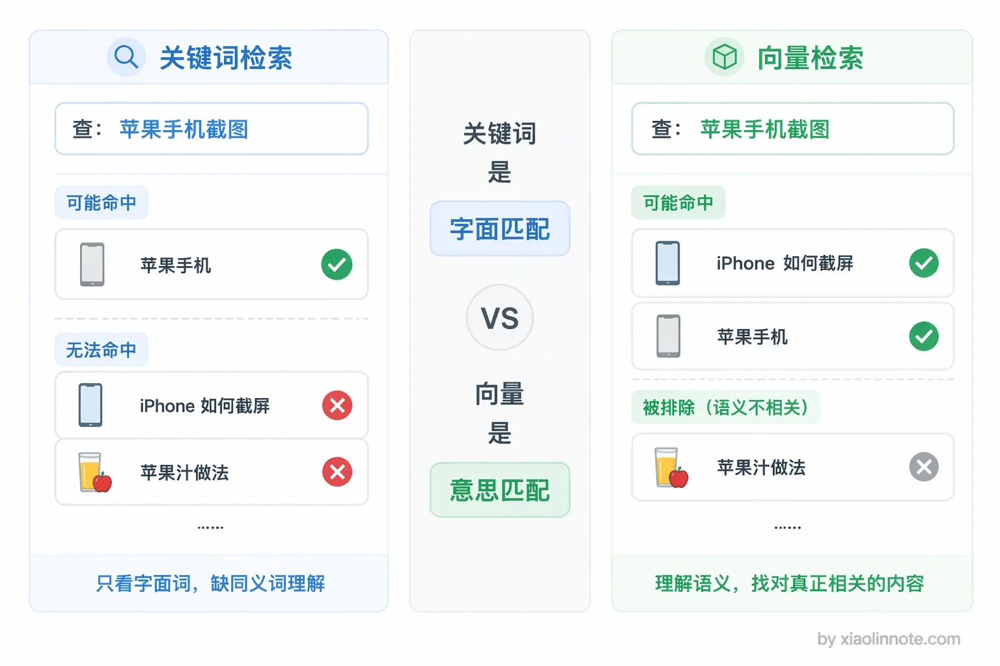
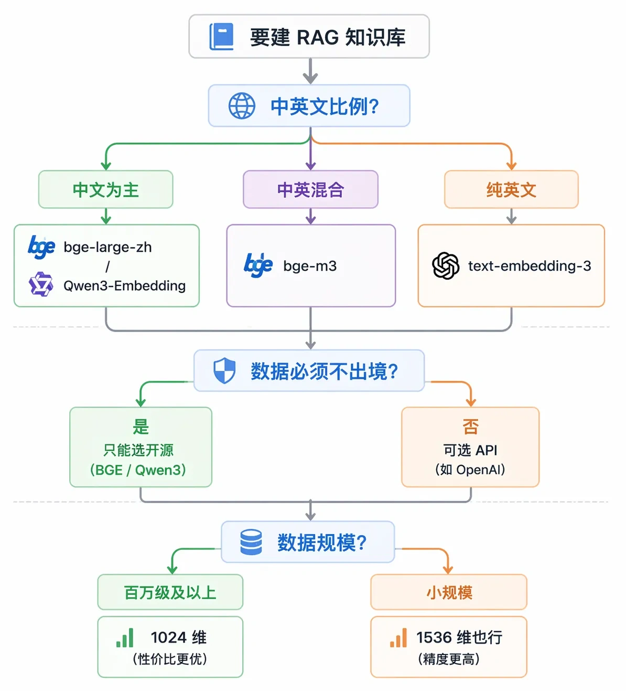
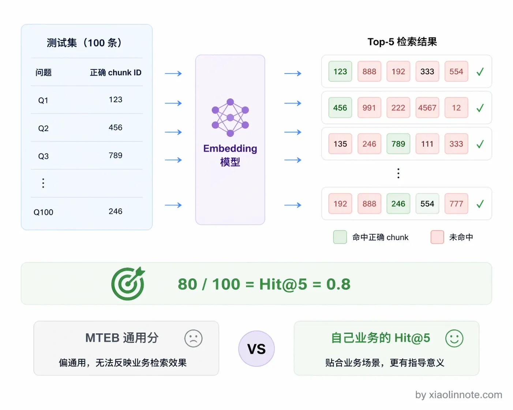

6. 在 RAG 中 Embedding 究竟是什么？如何选择和评估一个 Embedding 模型？
👔面试官：RAG 里的 Embedding 是什么？你是怎么选模型的？
🙋♂️我：Embedding 就是把文本变成向量，用 OpenAI 的模型就行了，效果最好。
👔面试官：「把文本变成向量」说了等于没说。向量的关键特性是什么？为什么语义相似的文本向量就靠近？这个原理你能解释吗？而且 OpenAI 的模型在中文场景上效果就一定好吗？
🙋♂️我：那我就选排行榜分数最高的模型，MTEB 排行榜第一名应该没问题吧？
👔面试官：MTEB 用的是通用数据集，你的业务是做医疗问答还是法律咨询？通用排行榜能代表你的场景效果？你有没有在自己的数据上做过评估？Hit@K 是什么指标你知道吗？
🙋♂️我：呃……Hit@K 没听过，我们就直接用 OpenAI 的，没测过别的。
👔面试官：选模型不测试，全靠感觉和排行榜，这样做出来的系统能好用就怪了。
好吧，Embedding 这块看似只是调个 API，但选型不当整个 RAG 的检索质量都会受影响。下面我来讲清楚。
💡 简要回答
Embedding 我理解就是把一段文本转成一串数字向量的过程。它有一个很关键的特性，就是语义相近的文本，转出来的向量在数学空间里的距离也近。RAG 里的语义检索就是靠这个实现的，不是关键词匹配，而是看两段内容的意思相不相近。
选模型的话，我主要看三个维度：第一是中文支持，中文场景我会优先选 BGE 系列，效果其实比 OpenAI 的模型还要好；第二是向量维度，维度越高精度越好，但存储成本也越大；第三是最大输入长度，这个决定了能处理多长的 chunk。
评估这块我的建议是不要只看通用排行榜，一定要在自己的业务数据上跑召回测试，那个才是真正有参考价值的。
📝 详细解析
Embedding 是什么?
Embedding 模型做的事情本质上是「语义压缩」，把一段自然语言文本映射成一个固定长度的浮点数向量。比如一个 1024 维的 Embedding 模型，不管输入的文本是 10 个字还是 500 个字，输出都是一个长度为 1024 的数字列表。
这个映射最关键的性质是：语义相近的文本，向量的余弦相似度高。
为什么衡量相似度要用「余弦」而不是直接算两个向量的直线距离？因为在高维空间里，两段文本的向量长度（模长）会受文本长度、表达强度等非语义因素影响，直接比距离会把「长短」和「语义」混在一起。而余弦只看两个向量的方向（也就是夹角），方向越一致余弦值越接近 1，正好把「意思相近」从「文本长短」里剥离出来。你可以把它理解成：两段话如果「指向同一个意思」，它们的向量箭头就朝着同一个方向，至于箭头多长无所谓。

你可能会觉得这没什么了不起的，关键词搜索不也能找到相关内容吗？还真不一样。
比如「苹果手机怎么截图」和「iPhone 如何截屏」，这两句话一个字都不一样，关键词搜索根本匹配不上，但经过 Embedding 之后，两个向量的余弦相似度可能高达 0.95；而「苹果手机」和「苹果汁」虽然都有「苹果」，但语义相差很远，向量距离也会拉开。
这就是语义检索比关键词匹配强的核心原因，它能处理同义词、近义词和不同的表达方式。很多人以为向量检索就是高级的关键词匹配，其实完全不是一回事，它是从「意思」层面在做匹配。

常见 Embedding 模型对比
理解了 Embedding 的原理，接下来就是选模型了。Embedding 模型这两年迭代很快，目前主流的选择大概分几类。
第一类是 OpenAI 的 text-embedding 系列，
text-embedding-3-small是性价比最高的，1536 维，支持降维到 256 维来节省存储，调用方便，英文效果非常好；缺点是 API 调用有费用，而且数据要发到 OpenAI 服务器，有些企业有数据出境合规问题。第二类是 BGE 系列（北京智源研究院出品），
bge-large-zh-v1.5是经典的中文开源模型，1024 维，可以本地部署，数据不出境。不过要注意的是，BGE 虽然仍然是很好的选择，但已经不是中文场景的唯一首选了。bge-m3是 BGE 的多语言版本，同时支持中英日等多种语言，1024 维，而且支持三种检索模式（稠密向量、稀疏向量、ColBERT 式多向量），适合中英文混排的场景。第三类是新一代高性能模型，这两年涌现了一批在 MTEB 排行榜上超过 BGE 的模型。
Qwen3-Embedding（阿里通义出品）在多语言基准上表现突出，中文效果很强；Voyage-3-large在英文检索上精度超过 OpenAI 的模型；Cohere embed-v4支持 128K 超长上下文，适合长文档场景；Gemini Embedding（Google 出品）在多个评测中表现均衡。如果你在 2025-2026 年做新项目，建议关注这些新模型，在自己的数据上做测评后再选型。
如何选择 Embedding 模型？
聊完了模型分类，具体到你自己的项目，该怎么选？选模型的时候主要看这几个判断点。
第一是中英文比例：知识库以中文为主，可以选
bge-large-zh-v1.5或者更新的Qwen3-Embedding；中英混合，选bge-m3；纯英文或追求省事，选text-embedding-3-small。第二是数据合规要求：数据不能出境，就必须用可以本地部署的开源模型，BGE 系列和 Qwen3-Embedding 都是很好的选择。
第三是向量维度对存储和检索速度的影响：维度越高精度越好，但存储空间和检索时间都会增加。百万量级的知识库，1024 维是个合理的平衡点；如果规模很小，1536 维也无所谓。有些新模型（如 text-embedding-3-small）支持 Matryoshka 降维，可以灵活调整维度来平衡精度和成本。

如何评估 Embedding 模型？
这里有一个常见的误区：很多人拿 MTEB 这类通用排行榜的分数来选模型，觉得分数高就一定好。MTEB 是一个权威的文本 Embedding 通用排行榜，用多种标准数据集评测模型的语义搜索能力，是好的参考。
但它用的是通用数据集，你的业务场景（比如医疗问诊、法律文档、客服知识库）和通用数据分布差异很大，排行榜第一的模型不一定适合你。就好比高考状元不一定擅长你那个行业的专业考试，测评的数据分布不对，分数就没有参考意义。
正确的评估方法是在自己的业务数据上测：准备几百条业务相关的「问题 + 正确答案 chunk」对，分别用候选模型做检索，看正确的 chunk 有没有出现在前 K 条结果里。这个指标叫 Hit@K，Hit@5 = 0.8 的意思就是，80% 的问题，它对应的答案都出现在了检索结果的前 5 条里。通常 Hit@5 低于 0.7 就要考虑换模型或者改进 Chunking 策略了。这种贴近真实场景的评估，比排行榜分数更有参考价值。

把常见的选型维度汇总对比一下：
| 模型 | 维度 | 中文效果 | 是否开源 | 适用场景 |
|---|---|---|---|---|
| text-embedding-3-small | 1536（可降维） | 一般 | 否（API） | 英文为主、快速上手 |
| text-embedding-3-large | 3072（可降维） | 一般 | 否（API） | 英文为主、精度要求高 |
| bge-large-zh-v1.5 | 1024 | 很好 | 是 | 中文知识库经典选择 |
| bge-m3 | 1024 | 好 | 是 | 中英混合、多语言、多模式检索 |
| Qwen3-Embedding | 多种可选 | 很好 | 是 | 中文场景新一代强力选择 |
| Voyage-3-large | 1024 | 一般 | 否（API） | 英文高精度检索 |
🎯 面试总结
回到开头那段面试，Embedding 这个问题考察的是你对 RAG 检索层基础的理解。
回答要讲清三点。
第一，Embedding 不只是「文本变向量」，关键是语义相近的文本向量距离近，这才是语义检索的基础。
第二，选模型要看场景：中文场景 BGE 和 Qwen3-Embedding 都是很好的开源选择，中英混合用 bge-m3，有数据合规要求就用开源模型本地部署。
第三，评估模型不要只看 MTEB 排行榜，要在自己的业务数据上跑 Hit@K 测试，这才是真正有参考价值的。
如果面试官追问「你用的什么模型，为什么选它」，你可以说「中文场景用 bge-large-zh-v1.5 或 Qwen3-Embedding，在自己的业务数据上 Hit@5 达到 0.8 以上，最终根据测评结果选的」，这个回答有理有据。
对了，大模型面试题会在「公众号@小林面试笔记题」持续更新，林友们赶紧关注起来，别错过最新干货哦！